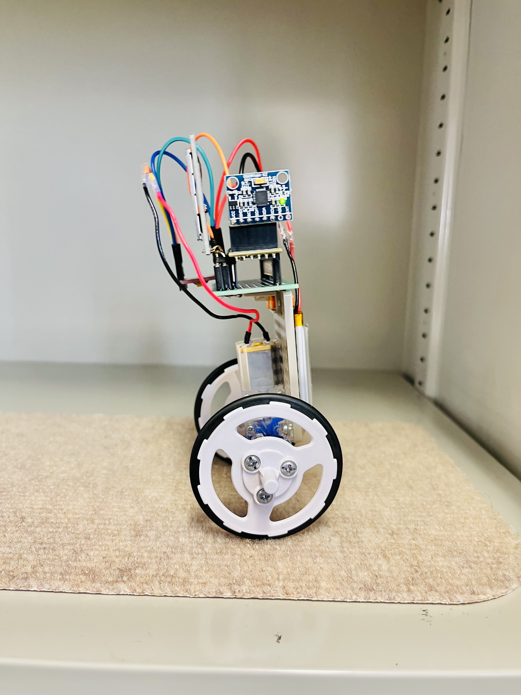
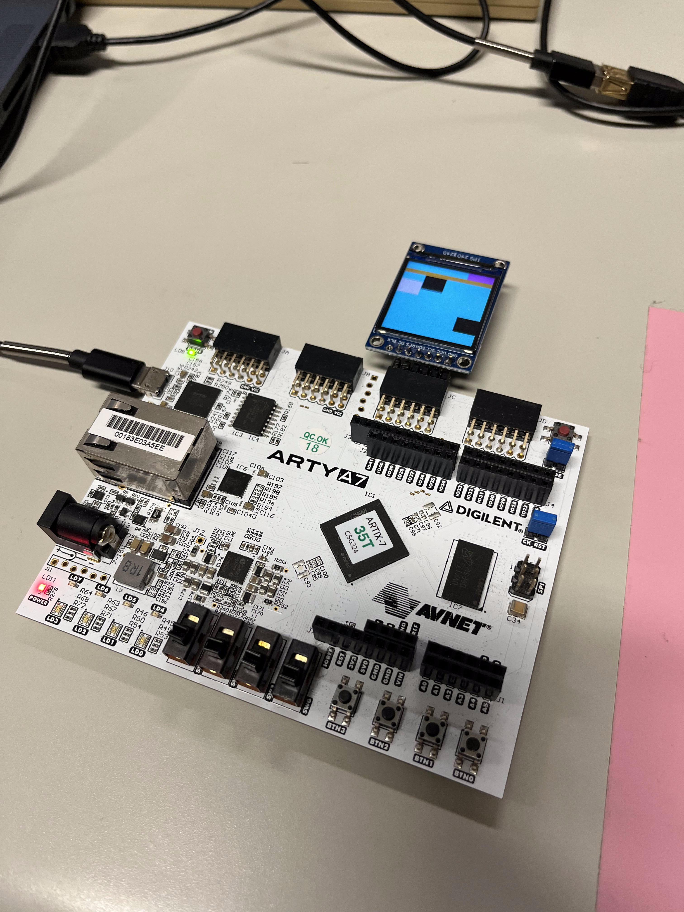
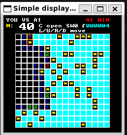

八戸工業高等専門学校 産業システム工学科電気情報工学コース 入学
$ load profile
[OK] profile.json
$ compile projects
[OK] fpga_piano.v
[OK] minesweeper_solver.c
$ render portfolio
█Profile
熊谷 大智 Kumagai Daichi
こんにちは。東京科学大学3年の熊谷大智です。 八戸工業高等専門学校を卒業し、現在は東京科学大学の吉瀬研究室に在籍しています。 ハードウェアに関する知識を増やせるよう日々勉強中です。
Contact
kumagai.d.1e80@m.isct.ac.jp
GitHub
github.com/kumagai0212
Background
経歴・資格
八戸工業高等専門学校 産業システム工学科電気情報工学コース 卒業
東京工業大学 情報理工学院情報工学系 編入学
吉瀬研究室 所属
応用情報技術者試験（令和7年度春）
基本情報技術者（2024/7/12）
TOEIC 830点（2024/1/28）
Publications
研究業績

Robbit: A User-Friendly and Two-Wheeled Self-Balancing Robot Using an FPGA
Daichi Kumagai, Yuya Iwata, Komei Kodera, Kenji Kise
FPGAを用いた低コストでユーザーフレンドリーな二輪倒立振子ロボット「robbit」の提案。 RISC-VソフトコアプロセッサとCFU Proving Groundフレームワークを活用し、 ハードウェア・ゲートウェア・ソフトウェアの協調設計を学習できる教育用プラットフォームとして設計・実装を行いました。
Publisher Link (DOI)Projects
制作物

FPGA Piano Tiles
- Device: Digilent Arty A7-35T
- Language: Verilog HDL
- Peripherals: ST7789 (240x240 LCD), Tactile Buttons
FPGAボード上で動作するリズムゲーム（ピアノタイル）です。 4つのレーンから落下してくるノーツに合わせて、タイミングよく対応するボタンを押すゲームシステムを実装しました。
プロセッサを使用せず、すべてのロジックをVerilogで実装しています。 32-bit Xorshiftによるランダムなノーツ生成、SPI通信によるLCD描画制御、 VRAM管理回路、進行に応じて落下速度が上昇する動的な難易度調整機能を備えています。
GitHub Repository
Minesweeper Solver FPGA
- Device: Digilent Nexys A7
- Language: C, Verilog HDL
- Peripherals: ST7789 (240x240 LCD), VGA, Buttons, 7-segment Display
FPGAボード上で動作する対戦型マインスイーパーです。 人間プレイヤーとAIが同じ盤面で交互にセルを開き、先に地雷を開いた側が負けとなるゲームシステムを実装しました。
CFU Proving GroundをベースにしたRISC-VソフトコアSoC上でゲームロジックを実行し、 ボタン入力や7セグメント表示をメモリマップドI/Oとして扱うハードウェアをVerilogで追加しました。 AIはルールベースの推論とリスク評価により安全なセルを探索します。 ST7789 LCDとVGA出力の両方に対応し、特殊セルによる情報差やターン制御を含むゲーム性を実現しています。
GitHub RepositoryExperience
職歴
Aratama Factory
Website ↗FPGAを用いたハードウェア開発業務に従事しています。 業務の詳細は非公開ですが、主に以下の技術領域に関する開発・設計を行っています。
FPGA開発
ディジタル回路設計
ビームフォーミング
プロンプトエンジニアリング
Skills
技術スタック
Languages
- Verilog HDL
- SystemVerilog
- C / C++
- Python
- HTML / CSS
Hardware & FPGA
- Xilinx Artix-7 (Arty, Cmod)
- RISC-V Architecture
- Digital Circuit Design
- High-Level Synthesis (HLS)
- I2C / SPI / UART
Tools & Others
- Vivado / Vitis
- Git / GitHub
- Visual Studio Code
- LaTeX
- Linux